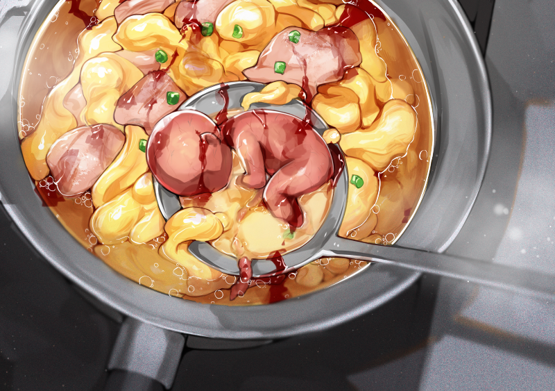
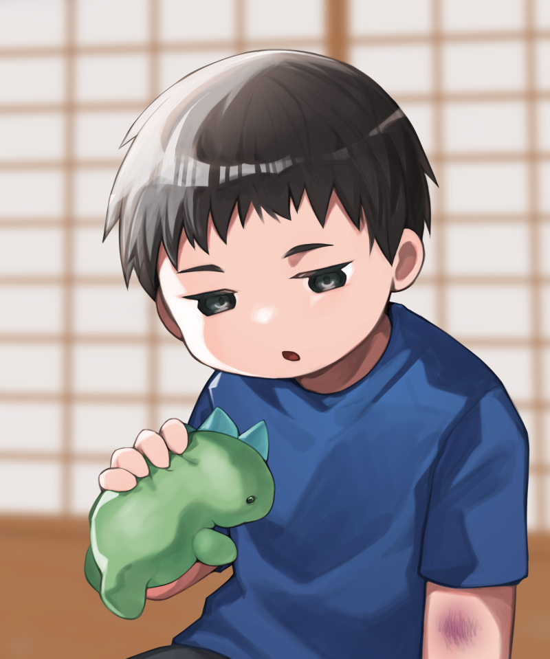
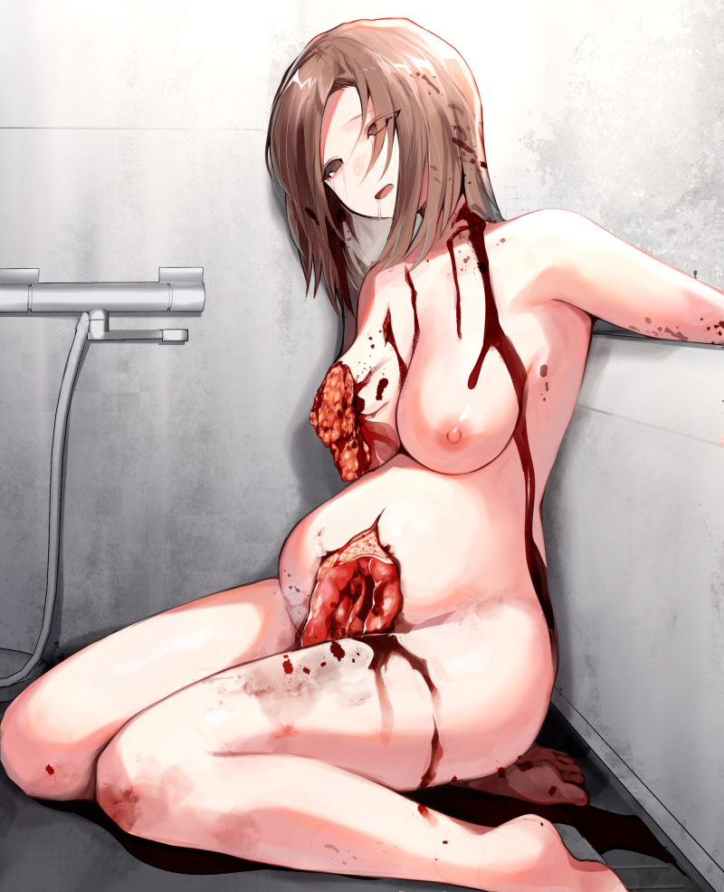
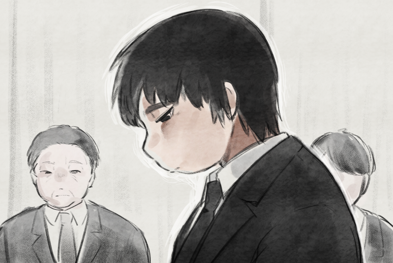

妊婦親子卵スープ事件

妊婦親子卵スープ事件（にんぷおやこたまごスープじけん）とは、2020年8月、香川県丸亀市で発生した殺人・死体損壊・カニバリズム事件である。
当時28歳の男・橋本拓夢（はしもと たくむ）が妊娠4ヶ月の女性を刃物で刺殺し、体内の胎児とともに遺体を自宅に持ち帰ったのち、母体の乳房と胎児を鍋で卵スープとして調理し、口にしていたことが明らかになっている。
事件は社会に大きな衝撃を与え、「親子スープ事件」として報道された。
経緯
橋本は定職に就いた経験がなく、福祉支援を受けながら丸亀市内の一軒家で一人暮らしをしていた。
幼少期に父親からの暴力を受けて育ち、母親という存在に対して強い憧れを抱いていたとされる。
本人は「妊娠している人を見ると、胸がぐっとなる感じがした」と語っており、妊婦という存在に対して無意識に執着していたとみられている。

事件当日、橋本は市内の産婦人科近くに車を停め、マタニティマークをつけた女性の出入りを観察。
そのうちの一人を尾行し、帰宅ルートを把握した上で、夜間に住宅街の路上で待ち伏せて声をかけ、刃物で脅して車に押し込んだ。
車内で女性の胸部や首を複数回刺して殺害した後、自宅に遺体を運び込んだ。
犯行の一部始終は、住宅街に設置されていた防犯カメラに記録されており、女性の行方不明届の捜査線上に橋本が浮上した。
後日、家宅捜索により遺体の一部や調理器具などが発見され、逮捕に至った。
解体と調理
橋本は浴室で遺体を洗浄し、腹部を切開して胎児を取り出した。
さらに、母親の乳房を切除し、スライスした乳肉と胎児を鍋に入れて卵スープとして調理した。
調理には鶏ガラスープの素と水が使用され、胎児は丸ごとの状態で鍋に沈められた。
橋本はそのスープを盛り付け、口にしていたことが明らかになっている。

供述と裁判
取り調べに対し、橋本は「あまり美味しくなかったけど、満たされた気持ちになった」と話している。
精神鑑定の結果、責任能力はあると判断され、殺人・死体損壊などの罪で起訴された。
判決後、事件を取材した雑誌記者との獄中面会で、橋本は小さな声で、
「幸せになるはずだった子供の未来を奪ってしまった」と語り、初めて涙を流したという。
